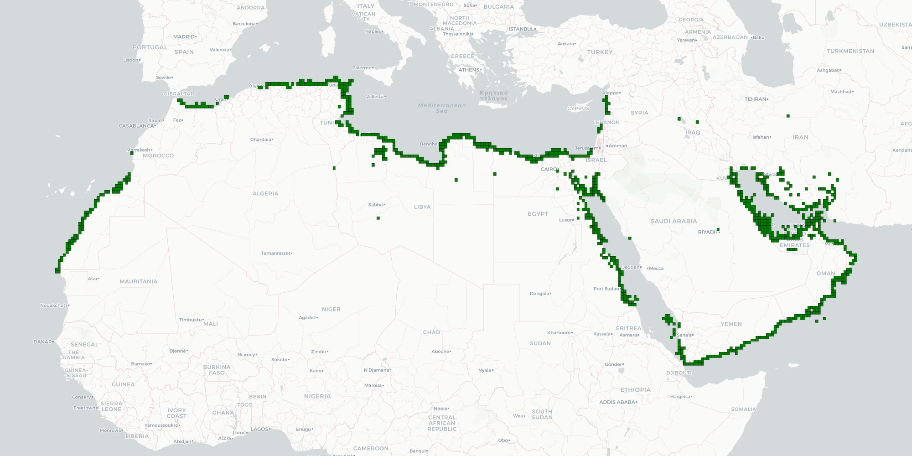

MarEA Stats Page

Site Documentation
MarEA Sites since July 2025
1720
MarEA Grids since July 2025
262
Total MarEA Sites
24882
Total MarEA Grids
965
Disturbance Cause Analysis
Tunisia
Based on reports of 338 sites, in 41 grids, by Brittni Bradford, Rached Hamdi, Mohamed Haouas, Joan Campmany Jiménez, Nichole Sheldrick, Haythem Abidi, Julia Nikolaus, Mohamed Rtimi, Julia Nikolaus, Sophie Tews, Nizar Ben Slimene, Walid Khalfalli, Slim Bechrifia, Dhouha Laribi Galalou, Riadh Smari, Sonia Slim, Faouzia Ben Zahra
Disturbance Causes
Saudi Arabia
Based on reports of 151 sites, in 15 grids, by Rodrigo Ortiz-Vazquez, Mohamed Osman
Disturbance Causes
Algeria
Based on reports of 327 sites, in 28 grids, by Jen Makovics, Mohamed Kenawi, Brittni Bradford
Disturbance Causes
Kuwait
Based on reports of 276 sites, in 15 grids, by Rodrigo Ortiz-Vazquez
Disturbance Causes
Libya
Based on reports of 206 sites, in 55 grids, by Julia Nikolaus, Heike Moeller, Julia Nikolaus, Brittni Bradford, Andrea Zerbini
Disturbance Causes
Egypt
Based on reports of 344 sites, in 76 grids, by Mohamed Osman, Mohamed Ashmawy, Mohamed Kenawi
Disturbance Causes
Yemen
Based on reports of 32 sites, in 28 grids, by Julia Nikolaus, Andrea Zerbini, Harmen Huigens, Michael Fradley
Disturbance Causes
Iraq
Based on reports of 26 sites, in 1 grids, by Rodrigo Ortiz-Vazquez
Disturbance Causes
United Arab Emirates
Based on reports of 7 sites, in 1 grids, by Rodrigo Ortiz-Vazquez
Disturbance Causes
Oman
Based on reports of 5 sites, in 1 grids, by Rodrigo Ortiz-Vazquez
Disturbance Causes
Syrian Arab Republic
Based on reports of 1 sites, in 1 grids, by Kristen Hopper, Kieran Westley